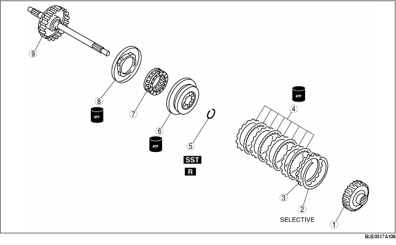
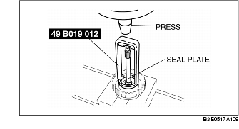
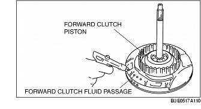
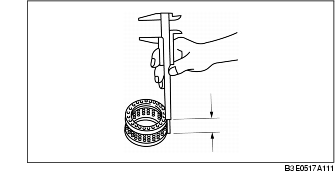
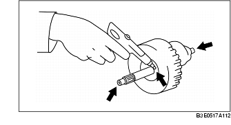
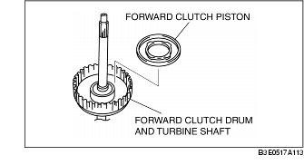
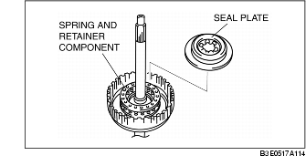
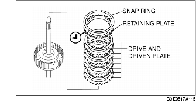
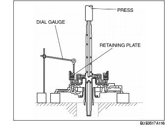
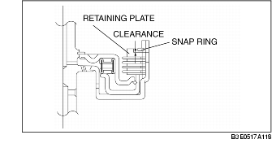

Forward clutch disassembly/assembly
1. Perform the preinspection before disassembly.
(See Forward Clutch Preinspection.)
2. Disassemble in the order indicated in the table.
3. Assemble in the reverse order of disassembly.

|
1
|
Forward clutch hub
|
|
2
|
Snap ring
|
|
3
|
Retaining plate
|
|
4
|
Drive and driven plate
|
|
5
|
Snap ring
(See Snap Ring Disassembly Note.)
|
|
6
|
Seal plate
|
|
7
|
Springs and retainer component
|
|
8
|
Forward clutch piston
|
|
9
|
Forward clutch drum and turbine shaft
|
Snap Ring Disassembly Note
1. Install the SST to the forward clutch.
- • Depress the seal plate only enough to remove the snap ring. Overpressing will damage the seal plate assembly edges.
2. Compress the seal plate.
3. Remove the snap ring.

4. Remove the SST, then remove the seal plate and spring and retainer component.
Forward Clutch Piston Disassembly Note
1. Set the forward clutch drum and turbine shaft onto the oil pump.
2. Remove the forward clutch piston by applying compressed air through the fluid passage.

Air pressure
Assembly Procedure
1. Measure the facing thickness in three places, and calculate the average value.
2. Measure the spring free length.

Spring free length
3. Verify that there is airflow when applying compressed air through the fluid passage.

Air pressure
4. Replace the forward clutch drum and turbine shaft if damaged or malfunctioning.
- • Installing the forward clutch piston may damage its seal. Carefully install the forward clutch piston by pushing evenly around the circumference.
5. Apply ATF to the circumference of the forward clutch piston seal, and install the piston into the forward clutch drum and turbine shaft.

6. Install the spring and retainer component.
7. Apply ATF to the seal plate, and install it onto the forward clutch drum.

8. Install the SST to the forward clutch drum and turbine shaft as shown.

- • Depress the seal plate only enough to remove the snap ring. Overpressing will damage the seal plate assembly edges.
9. Compress the seal plate.
10. Install the snap ring.
11. Remove the SST.
12. Install the drive and driven plates in the following order. Driven-Drive-Driven-Drive-Driven-Drive-Driven-Drive
13. Install the retaining plate.
14. Install the snap ring.

15. Measure the forward clutch clearance.
- (1) Install the forward clutch in the oil pump, and set the dial gauge.
-
(2) Secure the forward clutch by lightly pressing down with a press or similar tool.

-
(3) Apply compressed air to the part indicated in the figure and let the forward clutch piston stroke three times.

Air pressure
- (4) Apply compressed air and operate the forward clutch piston. Read the value when the indicator of the dial gauge stops.
- (5) Release the compressed air and read the dial gauge when the forward clutch piston is not operating.
- (6) Calculate the forward clutch clearance according to the following formula:
- Step (4) value- Step (5) value= Forward clutch clearance.
-
(7) Measure the clearances at four locations (90° apart) by following the steps (3) to (6). Verify that the average value is within the specification below:

Forward clutch clearance
- (8) Add the thickness to the average value calculated in step (7), and select the snap ring whose range includes the value.
- (9) Install the selected snap ring and perform steps (2) to (7) again. Verify that the calculated value satisfies the clearance specification.
Snap ring sizes
16. Inspect the forward clutch operation.

- (1) Install the forward clutch drum and turbine shaft to the oil pump.
- (2) Inspect the forward clutch operation by applying compressed air as shown. Air pressure
17. Install the forward clutch hub.